Zachodniopomorskie
Województwo zachodniopomorskie - województwo położone w północno-zachodniej części Polski, na wybrzeżu Morza Bałtyckiego. Zajmuje obszar 22 892,48 km², 31 grudnia 2021 r. miało około 1,64 mln mieszkańców. Siedzibą władz województwa jest Szczecin. Jest najdalej wysuniętym na zachód województwem w Polsce.

- Herb woj. Zachodniopomorskiego
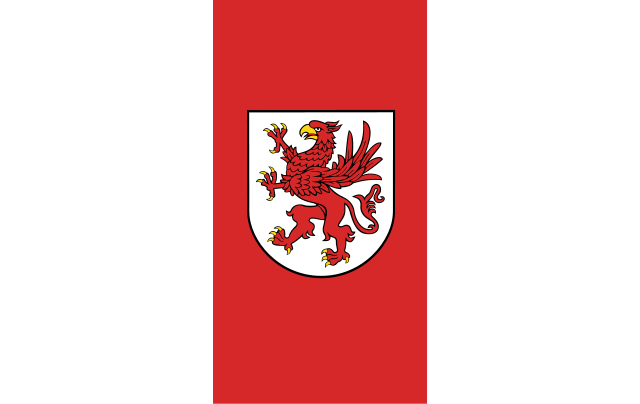
- Flaga woj. Zachodniopomorskiego
Pomorskie
Województwo pomorskie - jednostka podziału administracyjnego Polski, jedno z 16 województw, położone w północnej części kraju. Siedzibą władz województwa jest Gdańsk. Obejmuje obszar o powierzchni 18 310,34 km². Jest najdalej wysuniętym na północ województwem państwa.

- Herb woj. Pomorskiego
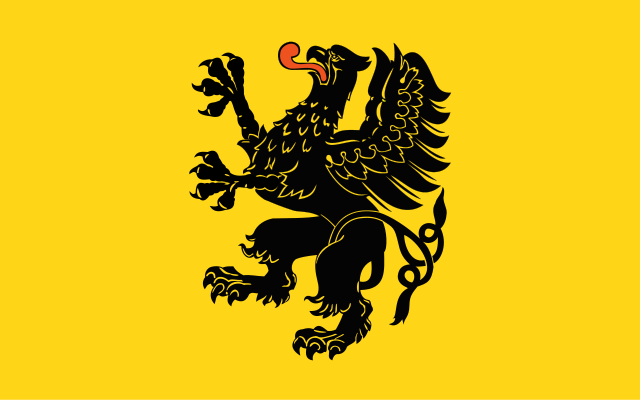
- Flaga woj. Pomorskiego
Warmińsko-mazurskie
Województwo warmińsko-mazurskie - jednostka podziału administracyjnego Polski, jedno z 16 województw. Położone jest w północno-wschodniej części kraju. Siedzibą wojewody i władz samorządu województwa jest Olsztyn. Obejmuje obszar 24 173,47 km² (stan na 31 grudnia 2017) i liczy około 1,36 mln mieszkańców (30 czerwca 2023).

- Herb woj. Warmińsko-mazurskiego
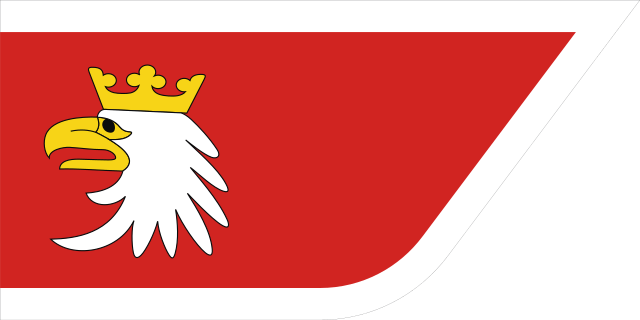
- Flaga woj. Warmińsko-mazurskiego
Podlaskie
Województwo podlaskie - jednostka podziału administracyjnego Polski, jedno z 16 województw. Położone jest w północno-wschodniej części kraju. Przez jego środek przepływa Narew. Siedzibą władz województwa jest Białystok. Na dzień 1 stycznia 2022 województwo miało około 1,1 mln mieszkańców. Obejmuje obszar 20 187,02 km².

- Herb woj. Podlaskiego
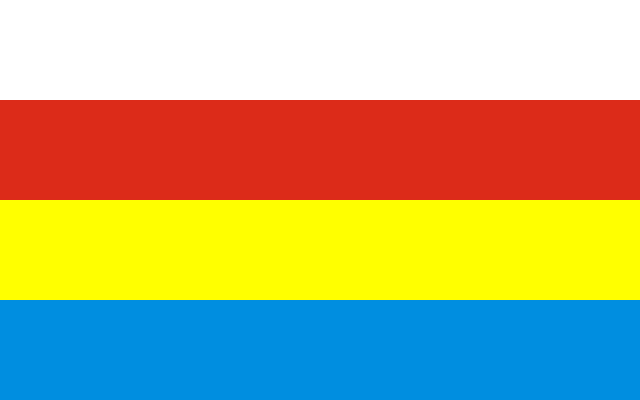
- Flaga woj. Podlaskiego
Lubelskie
Województwo lubelskie - jednostka samorządu terytorialnego i podziału administracyjnego we wschodniej Polsce. Obejmuje głównie południową połowę Niziny Południowopodlaskiej, Polesie Zachodnie i Wołyńskie (po Bug) oraz Wyżynę Lubelską, mały obszar Wyżyny Wołyńskiej, większość polskiego Roztocza i skraj Kotliny Sandomierskiej. Według danych GUS 30 czerwca 2020 roku zamieszkiwało je około 2,1 mln osób. Siedzibą władz wojewódzkich jest Lublin. Jest najdalej wysuniętym na wschód województwem w Polsce.

- Herb woj. Lubelskiego

- Flaga woj. Lubelskiego
Podkarpackie
Województwo podkarpackie - jednostka podziału administracyjnego Polski, jedno z 16 województw utworzonych w 1999 roku. Powstało poprzez scalenie ziem województw przemyskiego i rzeszowskiego, oraz części krośnieńskiego, tarnobrzeskiego i tarnowskiego. Siedzibą władz rządowych (wojewody) i samorządowych (sejmiku) województwa jest Rzeszów.

- Herb woj. Podkarpackiego
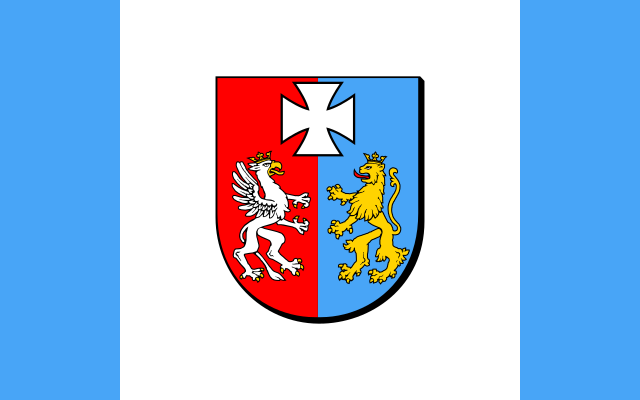
- Flaga woj. Podkarpackiego
Małopolskie
Województwo małopolskie - jedno z 16 województw Polski. Województwo zajmuje powierzchnię 15 182 km² i jest jednym z mniejszych w Polsce (12 miejsce w kraju). Województwo ma około 3,4 mln mieszkańców (stan na 31 grudnia 2019), zajmując pod tym względem 4. miejsce w Polsce. W obecnym kształcie powstało 1 stycznia 1999 r. w wyniku reformy administracyjnej. Siedzibą wojewody i sejmiku jest Kraków.

- Herb
Śląskie
Województwo śląskie - jednostka samorządu terytorialnego i jednostka podziału administracyjnego Polski o powierzchni 12 333,09 km², położona na obszarze Niziny Śląskiej, Wyżyny Śląsko-Krakowskiej, Kotliny Oświęcimskiej, Pogórza Zachodniobeskidzkiego, Beskidów Zachodnich. Siedzibą władz województwa są Katowice.

- Herb woj. Śląskiego
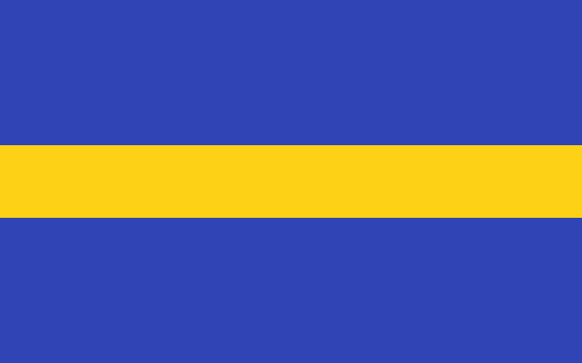
- Flaga woj. Śląskiego
Opolskie
Województwo opolskie - jedno z 16 województw w Polsce. Obejmując obszar o powierzchni 9412 km² jest obecnie najmniejszym województwem w Polsce. Według danych z 30 czerwca 2020 r. było też województwem z najmniejszą liczbą mieszkańców - 980 771 mieszkańców. Siedzibą władz województwa jest Opole.

- Herb woj. Opolskiego
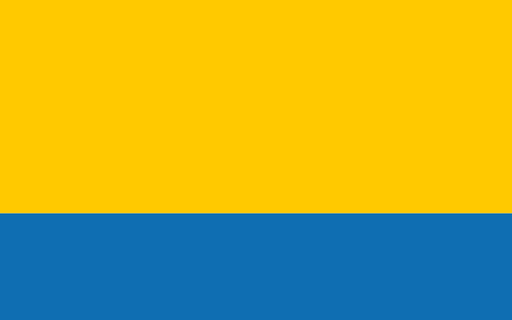
- Flaga woj. Opolskiego
Dolnośląskie
Województwo dolnośląskie - jednostka podziału administracyjnego Polski, jedno z 16 województw, ze stolicą we Wrocławiu. Zostało utworzone w 1999 roku z ziem poprzednich województw wrocławskiego, legnickiego, jeleniogórskiego, wałbrzyskiego i części leszczyńskiego oraz kaliskiego. Województwo to jest położone na południowym zachodzie Polski, obejmuje zachodnią część historycznego Śląska, czyli większość Dolnego Śląska, a także ziemię kłodzką oraz wschodnie Łużyce Górne.

- Herb Dolnegośląska
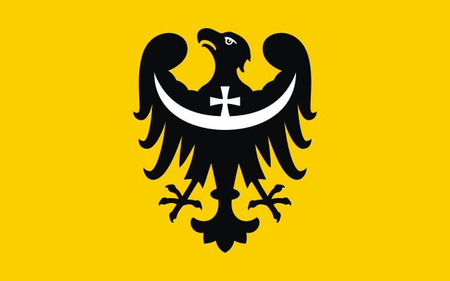
- Flaga Dolnegośląska
Lubuskie
Województwo lubuskie - województwo w zachodniej Polsce, utworzone w 1999 roku - w wyniku reformy administracyjnej - z większości terytoriów dawnych województw: gorzowskiego i zielonogórskiego oraz niewielkiej części leszczyńskiego, a funkcjonujące od 1 stycznia 1999. Siedzibą wojewody jest Gorzów Wielkopolski, zaś władz samorządu województwa - Zielona Góra.

- Herb woj. Lubuskiego
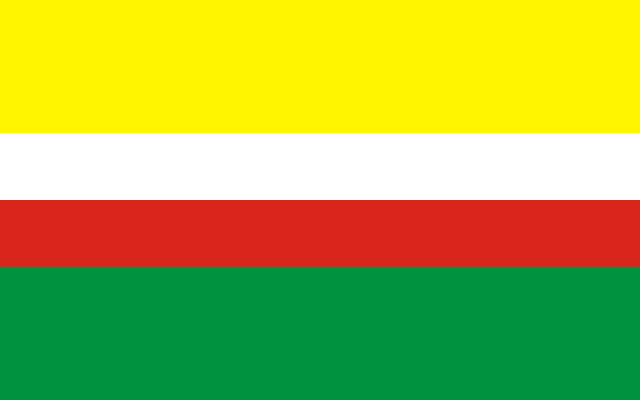
- Flaga woj. Lubuskiego
Wielkopolskie
Województwo wielkopolskie - województwo utworzone w 1999 w środkowo-zachodniej Polsce, na Pojezierzu Wielkopolskim i Nizinie Południowowielkopolskiej, w dorzeczu środkowej Warty; dzieli się na 4 miasta na prawach powiatu, 31 powiatów i 226 gmin, które zamieszkuje około 3,49 mln osób (30 czerwca 2023); siedzibą wojewody i władz samorządu województwa jest Poznań.

- Herb woj. Wielkopolskiego
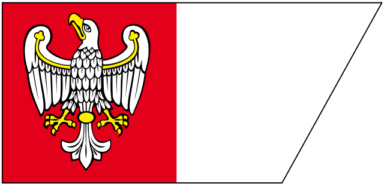
- Flaga woj. Wielkopolskiego
Kujawsko-pomorskie
Województwo kujawsko-pomorskie - jedno z 16 polskich województw leżące w północno-centralnej części kraju. Zostało utworzone na mocy ustawy z dnia 24 lipca 1998 w przybliżeniu z dawnych województw: bydgoskiego, toruńskiego i włocławskiego. Urzędy i jednostki szczebla wojewódzkiego zostały rozdzielone pomiędzy dwa główne miasta regionu. Siedziba wojewody oraz większości urzędów administracji państwowej została ustanowiona w Bydgoszczy, natomiast siedziba sejmiku województwa, marszałka i zarządu województwa oraz organów administracji samorządowej w Toruniu.

- Herb woj. Kujawsko-pomorskiego
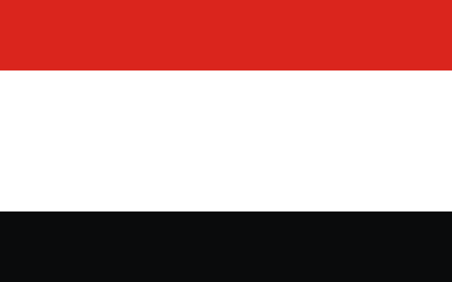
- Flaga woj. Kujawsko-pomorskiego
Mazowieckie
Województwo mazowieckie - jednostka podziału administracyjnego Polski, największe pod względem powierzchni i ludności województwo, znajdujące się w środkowej i wschodniej części Polski. Obejmuje obszar o powierzchni 35 558,47 km². Według danych z 31 grudnia 2019 r. miało około 5,4 mln mieszkańców. Siedzibą władz województwa jest Warszawa.Województwo zostało utworzone 1 stycznia 1999 roku.

- Herb woj. Mazowieckiego
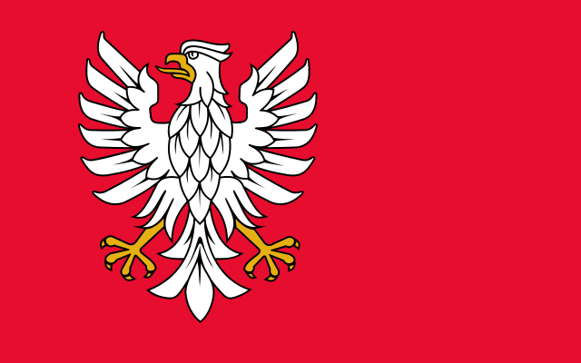
- Flaga woj. Mazowieckiego
Łódzkie
Województwo łódzkie - jedno z 16 województw Polski, położone w centralnej części kraju. Obejmuje obszar o powierzchni 18 218,98 km². Według danych z 1 stycznia 2023 roku województwo zamieszkiwało 2 378 483 osoby. Ma najmniejszą lesistość w kraju. Siedzibą władz województwa jest Łódź.

- Herb

- Flaga
Świetokrzyskie
Województwo świętokrzyskie - jednostka podziału administracyjnego w południowej części centralnej Polski. Województwo obejmuje obszar 11 710,50 km² i zamieszkuje je około 1,2 mln osób. Jest jednym z 16 województw utworzonych w 1999 roku.

- Herb woj.